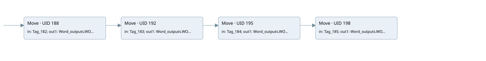

main
main · 검색 색인 순서 6 · 원본 내부 NID 추정 4
백업 PLF 원본의 3190297 바이트 위치에서 복원한 XML. 검색 문서 1617의 객체 키 16102200a66b000000000000와 연결했다. 이름 해석 8/8개. 남은 RefId는 상수 또는 미해석 참조다.
연결 구조 다시 그리기
원본 Part/PCon/Wire를 이용한 연결도다. TIA 화면의 래더 배치 또는 실행 결과를 재현한 그림은 아니다. 핀 연결은 아래 표와 원본 XML을 기준으로 읽는다. 노드 위에 마우스를 두면 피연산자 이름을 볼 수 있다.

접점·코일·블록과 피연산자
| Part UID | Gate | Negated 핀 | 연결 피연산자 |
|---|---|---|---|
| 188 | Move | in = Tag_182; out1 = Word_outputs.WORD5 | |
| 192 | Move | in = Tag_183; out1 = Word_outputs.WORD6 | |
| 195 | Move | in = Tag_184; out1 = Word_outputs.WORD7 | |
| 198 | Move | in = Tag_185; out1 = Word_outputs.WORD8 |
접점 경로를 펼친 조건식
Contact·O/A·비교기의 원본 연결을 읽기 쉽게 펼친 보조 해석이다. POWER는 전원 레일 시작을 뜻한다. 호출 블록·에지·타이머의 내부 동작과 다중 쓰기 순서는 이 표로 실행 검증하지 않았다. 미해석 핀과 RefId는 원문 연결표에서 확인한다.
| UID | 동작 | 대상 | 원본 접점 경로 | 내용 |
|---|---|---|---|---|
| 188 | Move | Word_outputs.WORD5 | POWER | Move 입력 Tag_182 |
| 192 | Move | Word_outputs.WORD6 | Move UID 188.eno (블록 동작 확인) | Move 입력 Tag_183 |
| 195 | Move | Word_outputs.WORD7 | Move UID 192.eno (블록 동작 확인) | Move 입력 Tag_184 |
| 198 | Move | Word_outputs.WORD8 | Move UID 195.eno (블록 동작 확인) | Move 입력 Tag_185 |
원본 배선 연결
| Wire UID | 동일 Wire 연결 끝점 |
|---|---|
| 211 | ORef 201 (Tag_182) ↔ Part 188.in |
| 212 | Part 188.out1 ↔ ORef 202 (Word_outputs.WORD5) |
| 213 | Part 188.eno ↔ Part 192.en |
| 214 | ORef 203 (Tag_183) ↔ Part 192.in |
| 215 | Part 192.out1 ↔ ORef 204 (Word_outputs.WORD6) |
| 216 | Part 192.eno ↔ Part 195.en |
| 217 | ORef 205 (Tag_184) ↔ Part 195.in |
| 218 | Part 195.out1 ↔ ORef 206 (Word_outputs.WORD7) |
| 219 | Part 195.eno ↔ Part 198.en |
| 220 | ORef 207 (Tag_185) ↔ Part 198.in |
| 221 | Part 198.out1 ↔ ORef 208 (Word_outputs.WORD8) |
| 222 | Powerrail {} ↔ Part 188.en |
식별자 해석 근거 8개
| ORef UID | RefId | 이름 | IdentXmlPart 파일 | 해석 방법 |
|---|---|---|---|---|
| 201 | 33 | Tag_182 | 0692-IdentXmlPart.xml | UID/RID + search-text + NID agreement |
| 202 | 34 | Word_outputs.WORD5 | 0690-IdentXmlPart.xml | UID/RID + search-text + NID agreement |
| 203 | 36 | Tag_183 | 0692-IdentXmlPart.xml | UID/RID + search-text + NID agreement |
| 204 | 37 | Word_outputs.WORD6 | 0690-IdentXmlPart.xml | UID/RID + search-text + NID agreement |
| 205 | 39 | Tag_184 | 0692-IdentXmlPart.xml | UID/RID + search-text + NID agreement |
| 206 | 40 | Word_outputs.WORD7 | 0690-IdentXmlPart.xml | UID/RID + search-text + NID agreement |
| 207 | 42 | Tag_185 | 0692-IdentXmlPart.xml | UID/RID + search-text + NID agreement |
| 208 | 43 | Word_outputs.WORD8 | 0690-IdentXmlPart.xml | UID/RID + search-text + NID agreement |
검색 코드 보조 자료
참조 명칭을 찾기 위한 자료이며 실행 순서나 AND/OR 관계는 위 연결표로 확인한다.
move "tag_182" move "tag_183" move "tag_184" move "tag_185" "word_outputs".word5 "word_outputs".word6 "word_outputs".word7 "word_outputs".word8